Summer at Debono
Plant perennials for flowers that return year after year. For colour on the deck this season, look through the hanging baskets and six-inch annuals.

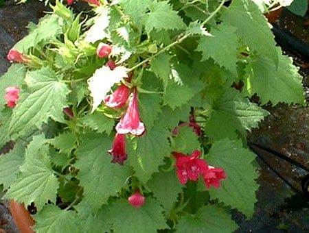


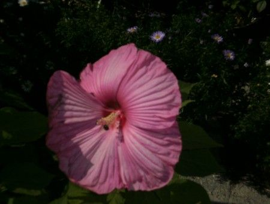

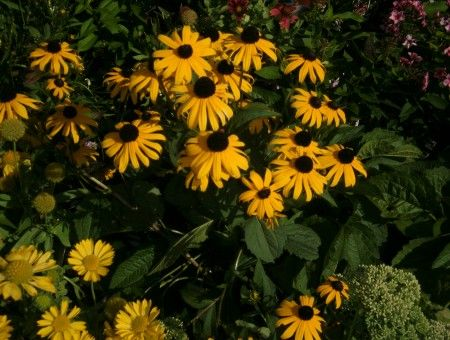

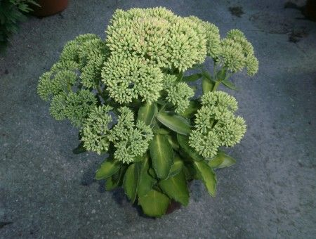

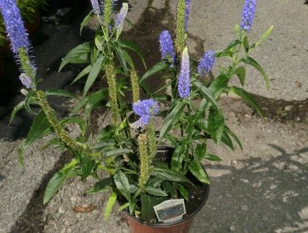

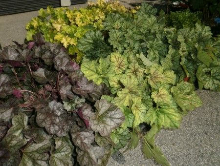

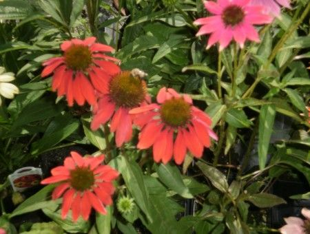

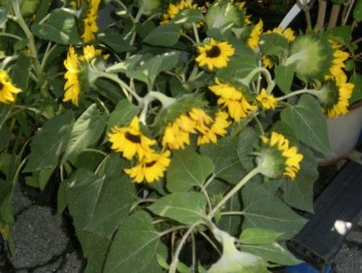

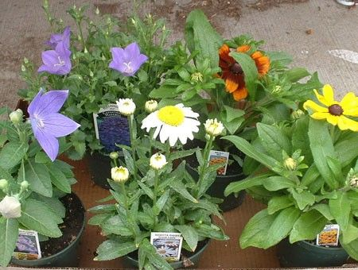

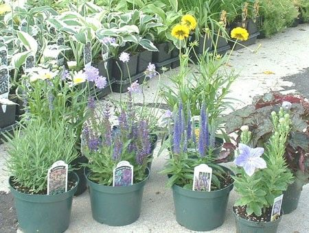

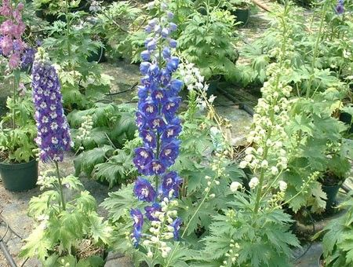

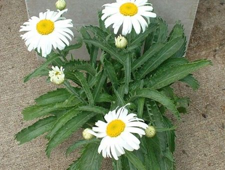
For current availability, call 519-443-7300.